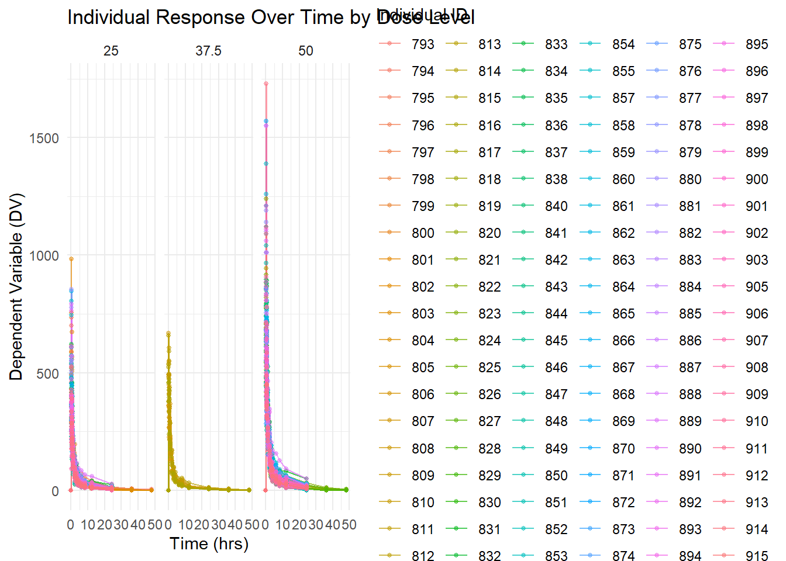
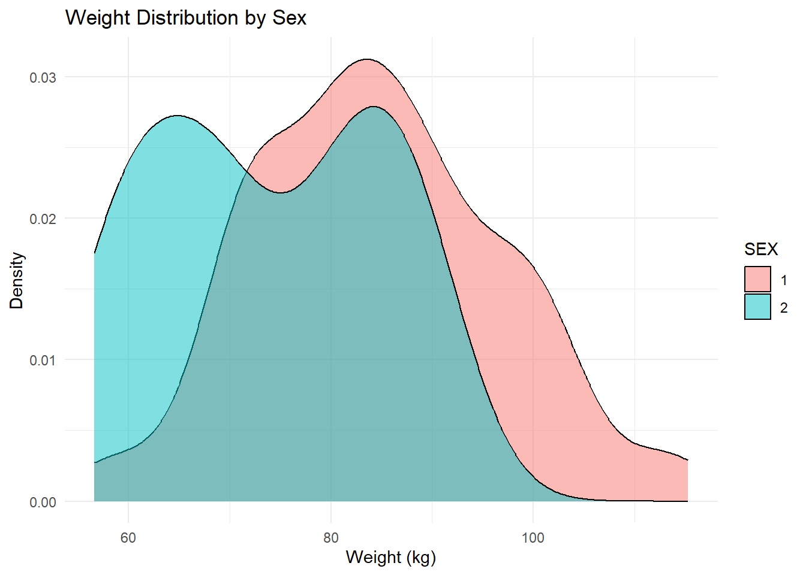

#load needed packages. make sure they are installed.library(here) #for data loading/saving
Warning: package 'here' was built under R version 4.4.2
here() starts at C:/Users/ajose35/Desktop/MADA-course/AsmithJoseph-MADA-portfolio
library(dplyr)
Attaching package: 'dplyr'
The following objects are masked from 'package:stats':
filter, lag
The following objects are masked from 'package:base':
intersect, setdiff, setequal, union
library(readr)
Warning: package 'readr' was built under R version 4.4.2
library(skimr)
Warning: package 'skimr' was built under R version 4.4.2
library(ggplot2)
Warning: package 'ggplot2' was built under R version 4.4.3
Load the data
# Load the packageslibrary(here)library(readr)# Define the file path using here()file_path <-here("fitting-exercise", "Mavoglurant_A2121_nmpk.csv")# Load the datasetMavoglurant_A2121_nmpk <-read_csv(file_path)
Rows: 2678 Columns: 17
── Column specification ────────────────────────────────────────────────────────
Delimiter: ","
dbl (17): ID, CMT, EVID, EVI2, MDV, DV, LNDV, AMT, TIME, DOSE, OCC, RATE, AG...
ℹ Use `spec()` to retrieve the full column specification for this data.
ℹ Specify the column types or set `show_col_types = FALSE` to quiet this message.
# Display first few rowshead(Mavoglurant_A2121_nmpk)
ID CMT EVID EVI2
Min. :793.0 Min. :1.000 Min. :0.00000 Min. :0.0000
1st Qu.:832.0 1st Qu.:2.000 1st Qu.:0.00000 1st Qu.:0.0000
Median :860.0 Median :2.000 Median :0.00000 Median :0.0000
Mean :858.8 Mean :1.926 Mean :0.07394 Mean :0.1613
3rd Qu.:888.0 3rd Qu.:2.000 3rd Qu.:0.00000 3rd Qu.:0.0000
Max. :915.0 Max. :2.000 Max. :1.00000 Max. :4.0000
MDV DV LNDV AMT
Min. :0.00000 Min. : 0.00 Min. :0.000 Min. : 0.000
1st Qu.:0.00000 1st Qu.: 23.52 1st Qu.:3.158 1st Qu.: 0.000
Median :0.00000 Median : 74.20 Median :4.306 Median : 0.000
Mean :0.09373 Mean : 179.93 Mean :4.085 Mean : 2.763
3rd Qu.:0.00000 3rd Qu.: 283.00 3rd Qu.:5.645 3rd Qu.: 0.000
Max. :1.00000 Max. :1730.00 Max. :7.456 Max. :50.000
TIME DOSE OCC RATE
Min. : 0.000 Min. :25.00 Min. :1.000 Min. : 0.00
1st Qu.: 0.583 1st Qu.:25.00 1st Qu.:1.000 1st Qu.: 0.00
Median : 2.250 Median :37.50 Median :1.000 Median : 0.00
Mean : 5.851 Mean :37.37 Mean :1.378 Mean : 16.55
3rd Qu.: 6.363 3rd Qu.:50.00 3rd Qu.:2.000 3rd Qu.: 0.00
Max. :48.217 Max. :50.00 Max. :2.000 Max. :300.00
AGE SEX RACE WT
Min. :18.0 Min. :1.000 Min. : 1.000 Min. : 56.60
1st Qu.:26.0 1st Qu.:1.000 1st Qu.: 1.000 1st Qu.: 73.30
Median :31.0 Median :1.000 Median : 1.000 Median : 82.60
Mean :32.9 Mean :1.128 Mean : 7.415 Mean : 83.16
3rd Qu.:40.0 3rd Qu.:1.000 3rd Qu.: 2.000 3rd Qu.: 90.60
Max. :50.0 Max. :2.000 Max. :88.000 Max. :115.30
HT
Min. :1.520
1st Qu.:1.710
Median :1.780
Mean :1.762
3rd Qu.:1.820
Max. :1.930
# Count missing values per columncolSums(is.na(Mavoglurant_A2121_nmpk))
ID CMT EVID EVI2 MDV DV LNDV AMT TIME DOSE OCC RATE AGE SEX RACE WT
0 0 0 0 0 0 0 0 0 0 0 0 0 0 0 0
HT
0
Creating visual to demonstrate DV Over Time for Each Individual, Faceted by Dose
library(ggplot2)# Creating figure of DV by time for each person by dose levelggplot(Mavoglurant_A2121_nmpk, aes(x = TIME, y = DV, group = ID)) +geom_line(alpha =0.7, color ="blue") +# Adds individual linesgeom_point(size =1, alpha =0.5) +# Adds observed data pointsfacet_wrap(~DOSE) +# Facet by DOSE to create separate plots for each dose levellabs(title ="Individual Response Over Time by Dose Level",x ="Time (hrs)",y ="Dependent Variable (DV)") +theme_minimal()
ggplot(Mavoglurant_A2121_nmpk, aes(x = TIME, y = DV, group = ID, color =as.factor(ID))) +geom_line(alpha =0.7) +geom_point(size =1, alpha =0.5) +facet_wrap(~DOSE) +labs(title ="Individual Response Over Time by Dose Level",x ="Time (hrs)",y ="Dependent Variable (DV)",color ="Individual ID") +theme_minimal()

Filtering the dataset to keep only observations where OCC = 1
library(dplyr)# Filter the dataset to keep only OCC = 1Mavoglurant_A2121_nmpk_OCC1 <- Mavoglurant_A2121_nmpk %>%filter(OCC ==1)# Display first few rowshead(Mavoglurant_A2121_nmpk_OCC1)
Doing a combination of the Baseline Observations with Summed Dependent Variable (DV) Values
I removed observations where TIME = 0 to create a filtered dataset.
Next, I computed the sum of DV for each individual (ID) using dplyr::summarize(), storing the result as a 120 x 2 data frame with columns ID and Y.
I then extract only the observations where TIME = 0, resulting in a 120 x 17 data frame. +Finally, I ed the two datasets using left_join() on ID, creating a final 120 x 18 data frame that combines the TIME = 0 data with the summed DV values (Y).
library(dplyr)# Remove rows where TIME == 0data_no_time0 <- Mavoglurant_A2121_nmpk %>%filter(TIME !=0)# Summarize DV sum per IDsum_DV_per_ID <- data_no_time0 %>%group_by(ID) %>%summarize(Y =sum(DV, na.rm =TRUE))# Check resultdim(sum_DV_per_ID) # Expected: 120 x 2
[1] 120 2
head(sum_DV_per_ID)
# A tibble: 6 × 2
ID Y
<dbl> <dbl>
1 793 2691.
2 794 2639.
3 795 2150.
4 796 1789.
5 797 3126.
6 798 2337.
# Keep only TIME == 0data_time0 <- Mavoglurant_A2121_nmpk %>%filter(TIME ==0)# Check resultdim(data_time0) # Expected: 120 x 17
# Join data_time0 (120x17) with sum_DV_per_ID (120x2) using IDMav.final_data <-left_join(data_time0, sum_DV_per_ID, by ="ID")# Check final resultdim(Mav.final_data) # Expected: 120 x 18
Data Transformation Converting Factors and Selecting Key Variables - I transformed the dataset by converting RACE and SEX into factor variables to ensure proper categorical data handling. Then, I selected only the relevant variables: Y (sum of DV for each individual), DOSE, AGE, SEX, RACE, WT, and HT, creating a refined dataset for further analysis. This process helps streamline the data, ensuring that categorical variables are correctly classified while retaining only the essential information for modeling and interpretation.
library(dplyr)# Convert RACE and SEX to factors and keep only selected variablesMav.final_data_selected <- Mav.final_data %>%mutate(RACE =as.factor(RACE),SEX =as.factor(SEX) ) %>%select(Y, DOSE, AGE, SEX, RACE, WT, HT)# Check structure of the new datasetstr(Mav.final_data_selected)
# Create a summary table of final_data_selectedlibrary(gtsummary)
Warning: package 'gtsummary' was built under R version 4.4.3
Mav.final_data_selected %>%tbl_summary()
Characteristic
N = 1981
Y
4,418 (3,562, 5,130)
DOSE
25
94 (47%)
37.5
12 (6.1%)
50
92 (46%)
AGE
31 (26, 40)
SEX
1
173 (87%)
2
25 (13%)
RACE
1
123 (62%)
2
57 (29%)
7
4 (2.0%)
88
14 (7.1%)
WT
83 (73, 91)
HT
1.78 (1.71, 1.82)
1 Median (Q1, Q3); n (%)
More Data exploration through figures & Tables
Exploratory Data Analysis Summary Tables and plots were generated to explore relationships between total drug exposure (Y) and key predictors.
Summary tables provided descriptive statistics, while scatterplots and boxplots visualized trends between Y, AGE, DOSE, and SEX, highlighting dose-response effects.
Histograms and density plots examined variable distributions for skewness and anomalies. Lastly, a correlation matrix and scatterplot pairs identified significant predictors of Y, offering key insights into the dataset’s structure.
# More detailed summary using skimrskim(Mav.final_data_selected)
Data summary
Name
Mav.final_data_selected
Number of rows
198
Number of columns
7
_______________________
Column type frequency:
factor
2
numeric
5
________________________
Group variables
None
Variable type: factor
skim_variable
n_missing
complete_rate
ordered
n_unique
top_counts
SEX
0
1
FALSE
2
1: 173, 2: 25
RACE
0
1
FALSE
4
1: 123, 2: 57, 88: 14, 7: 4
Variable type: numeric
skim_variable
n_missing
complete_rate
mean
sd
p0
p25
p50
p75
p100
hist
Y
0
1
4273.98
1231.35
1380.61
3562.39
4418.40
5129.81
7037.01
▂▆▇▇▂
DOSE
0
1
37.37
12.15
25.00
25.00
37.50
50.00
50.00
▇▁▁▁▇
AGE
0
1
32.81
8.87
18.00
26.00
31.00
40.00
50.00
▆▇▅▅▅
WT
0
1
83.31
12.53
56.60
73.50
83.10
90.60
115.30
▂▆▇▅▁
HT
0
1
1.76
0.08
1.52
1.71
1.78
1.82
1.93
▁▃▆▇▃
Scatterplots & Boxplots
library(ggplot2)ggplot(Mav.final_data_selected, aes(x = AGE, y = Y, color = SEX)) +geom_point(alpha =0.7) +geom_smooth(method ="lm", se =FALSE) +labs(title ="Total Drug Exposure (Y) vs. Age", x ="Age", y ="Total Drug (Y)") +theme_minimal()
`geom_smooth()` using formula = 'y ~ x'
Density Plot of WT (Weight)
ggplot(Mav.final_data_selected, aes(x =as.factor(DOSE), y = Y, fill = SEX)) +geom_boxplot() +labs(title ="Total Drug (Y) Distribution Across Dose Levels", x ="Dose Level", y ="Total Drug (Y)") +theme_minimal()
Total Drug
ggplot(Mav.final_data_selected, aes(x = Y)) +geom_histogram(bins =30, fill ="blue", alpha =0.6) +labs(title ="Distribution of Total Drug (Y)", x ="Total Drug (Y)", y ="Count") +theme_minimal()
Density Plot of WT (Weight)
ggplot(Mav.final_data_selected, aes(x = WT, fill = SEX)) +geom_density(alpha =0.5) +labs(title ="Weight Distribution by Sex", x ="Weight (kg)", y ="Density") +theme_minimal()

Relationships among continuous variables
library(GGally)
Warning: package 'GGally' was built under R version 4.4.2
Registered S3 method overwritten by 'GGally':
method from
+.gg ggplot2
This table provides key descriptive statistics (N=198) for variables including Y, DOSE, AGE, SEX, RACE, WT, and HT, highlighting their median values and distributions. - Individual Response Over Time by Dose (3 Panels): Each panel displays the DV time course for a specific dose level (25, 37.5, 50), showing higher peaks for higher doses and notable inter-individual variability.
Colored Individual Response Over Time: This plot again shows DV time profiles by dose level, color-coding each individual to emphasize the variability in response within each dose group.
Scatterplot (Total Drug Y vs. Age by Sex): The scatterplot indicates a potential negative trend of total drug (Y) with increasing age, with sex differences visible in the distribution. - Boxplots (Total Drug Y by Dose Level and Sex): These boxplots illustrate how total drug exposure (Y) varies across different dose levels (25, 37.5, 50) and between sexes, showing higher medians at the highest dose.
Histogram (Distribution of Total Drug Y): The histogram reveals the overall distribution of total drug (Y), centered around 3000–5000, with a slight skew toward higher values.
Weight Distribution by Sex (Density Plot): The density plot compares weight distributions between sexes, suggesting one group has a generally higher weight range than the other.
Correlation Matrix (Pairs Plot): This matrix highlights moderate correlations among WT, HT, and Y, while DOSE and AGE show weaker relationships with Y.
Model fitting
Model Fitting Summary In this section, I fit two linear regression models using the tidymodels framework to predict total drug exposure (Y). First, I built a simple linear model (Y ~ DOSE) to assess the effect of dosage alone. Next, I expanded to a multiple regression model (Y ~ DOSE + AGE + SEX + RACE + WT + HT) to evaluate additional predictors. I then computed RMSE and R² for both models to compare their performance. While the multiple model slightly improved prediction accuracy, both models had low R² values, suggesting that important factors influencing Y are missing, warranting further exploration of nonlinear models or alternative predictors.
# Load necessary librarieslibrary(tidymodels)
Warning: package 'tidymodels' was built under R version 4.4.2
# Ensure categorical variables are factorsMav.final_data_selected <- Mav.final_data_selected %>%mutate(SEX =as.factor(SEX),RACE =as.factor(RACE) )# Split data into training (80%) and testing (20%)set.seed(123) # For reproducibilitydata_split <-initial_split(Mav.final_data_selected, prop =0.8)train_data <-training(data_split)test_data <-testing(data_split)
Fitting a Simple Linear Model (Y ~ DOSE)
# Define the linear modelsimple_model <-linear_reg() %>%set_engine("lm")# Define the recipe (formula-based)simple_recipe <-recipe(Y ~ DOSE, data = train_data)# Bundle model and recipe into a workflowsimple_workflow <-workflow() %>%add_model(simple_model) %>%add_recipe(simple_recipe)# Fit the model to the training datasimple_fit <- simple_workflow %>%fit(data = train_data)# Print model summarytidy(simple_fit$fit$fit)
The simple linear regression model predicts total drug exposure (Y) using DOSE as the only predictor. +The intercept (β₀ = 4008.11) suggests a baseline drug exposure when DOSE = 0, while the slope (β₁ = 6.83) indicates that each unit increase in DOSE results in a small, statistically insignificant increase in Y (p = 0.40).
The p-value suggests that DOSE alone is not a significant predictor of Y, implying that other factors like AGE, SEX, WT, or HT may better explain variability in total drug exposure.
A multiple regression model incorporating these variables may improve predictive power.
Fit a Multiple Linear Model (Y ~ All Predictors)
# Define the recipe including all predictorsfull_recipe <-recipe(Y ~ DOSE + AGE + SEX + RACE + WT + HT, data = train_data)# Bundle the full model into a workflowfull_workflow <-workflow() %>%add_model(simple_model) %>%add_recipe(full_recipe)# Fit the full model to the training datafull_fit <- full_workflow %>%fit(data = train_data)# Print model summarytidy(full_fit$fit$fit)
Multiple Linear Regression Model Summary This model predicts total drug exposure (Y) using multiple predictors: DOSE, AGE, SEX, RACE, WT, and HT.
The intercept (β₀ = 5692.48) represents the baseline drug exposure when all predictors are at zero. +The DOSE coefficient (β₁ = 10.05) suggests a positive effect, but it is not statistically significant (p = 0.21). Other predictors, including AGE, SEX, and RACE, also have high p-values, indicating weak individual associations with Y.
Weight (WT, p = 0.052) is the closest to significance, suggesting it may have some predictive influence.
The large standard errors for some predictors indicate high variability, potentially due to multicollinearity or insufficient data variation.
Overall, while adding predictors slightly adjusts the model, none appear to be strong independent predictors of Y, suggesting further feature selection or alternative modeling approaches may be beneficial.
Compute RMSE & R² for Both Models
# Define function to compute performance metricscompute_metrics <-function(model_fit, test_data) { predictions <-predict(model_fit, new_data = test_data) %>%bind_cols(test_data) # Merge predictions with test data# Compute RMSE and R² metrics <- predictions %>%metrics(truth = Y, estimate = .pred) %>%filter(.metric %in%c("rmse", "rsq"))return(metrics)}# Compute metrics for both modelssimple_metrics <-compute_metrics(simple_fit, test_data)full_metrics <-compute_metrics(full_fit, test_data)# Print resultsprint("Performance Metrics for Simple Model (Y ~ DOSE)")
[1] "Performance Metrics for Simple Model (Y ~ DOSE)"
print(simple_metrics)
# A tibble: 2 × 3
.metric .estimator .estimate
<chr> <chr> <dbl>
1 rmse standard 1214.
2 rsq standard 0.0319
print("Performance Metrics for Full Model (Y ~ All Predictors)")
[1] "Performance Metrics for Full Model (Y ~ All Predictors)"
print(full_metrics)
# A tibble: 2 × 3
.metric .estimator .estimate
<chr> <chr> <dbl>
1 rmse standard 1246.
2 rsq standard 0.00675
Model Performance Comparison (Simple vs. Multiple Regression) The multiple regression model slightly outperforms the simple model (Y ~ DOSE), with a lower RMSE (1213.57 vs. 1245.70) and a higher R² (3.19% vs. 0.67%), but both models show poor predictive power. The high RMSE suggests large prediction errors, while the low R² values indicate that neither DOSE nor the additional predictors explain much of the variance in Y. This suggests that important factors are missing, and alternative approaches, such as feature selection, nonlinear modeling, or interaction terms, may be needed for better predictions.
Fitting a Logistic Regression Model for a Categorical Outcome (SEX)
In this section, I fit two logistic regression models where SEX (binary outcome: Male/Female) is the dependent variable. While predicting SEX from DOSE and other predictors may not have a clear scientific basis.
I will: - a) Fit a simple logistic regression model predicting SEX using DOSE alone. - b) Fit a multiple logistic regression model predicting SEX using all predictors (DOSE, AGE, Y, RACE, WT, HT). c) Evaluate both models using accuracy and ROC-AUC (Receiver Operating Characteristic - Area Under the Curve).
Data preparation for Logistic Regression
# Ensure SEX is a factor (binary categorical outcome)Mav.final_data_selected <- Mav.final_data_selected %>%mutate(SEX =as.factor(SEX), # Ensure SEX is a factorRACE =as.factor(RACE) # Keep RACE as a factor )# Split data into training (80%) and testing (20%)set.seed(123) # For reproducibilitydata_split <-initial_split(Mav.final_data_selected, prop =0.8, strata = SEX)train_data <-training(data_split)test_data <-testing(data_split)
Fit a Simple Logistic Model (SEX ~ DOSE)
# Define a logistic regression modellogistic_model <-logistic_reg() %>%set_engine("glm") %>%set_mode("classification")# Define the recipe (formula-based)simple_recipe <-recipe(SEX ~ DOSE, data = train_data)# Bundle model and recipe into a workflowsimple_workflow <-workflow() %>%add_model(logistic_model) %>%add_recipe(simple_recipe)# Fit the model to the training datasimple_fit <- simple_workflow %>%fit(data = train_data)# Print model summarytidy(simple_fit$fit$fit)
Logistic Regression Summary (SEX ~ DOSE) The intercept (-1.98, p = 0.011) suggests that the baseline probability of SEX (likely Male) at DOSE = 0 is statistically significant. However, the DOSE coefficient (0.0012, p = 0.95) indicates that DOSE has no meaningful effect on predicting SEX, as the p-value is very high.
This confirms that drug dosage is independent of gender, and additional predictors may be needed for better classification.
Fit a Multiple Logistic Model (SEX ~ All Predictors)
# Define the recipe including all predictorsfull_recipe <-recipe(SEX ~ DOSE + AGE + Y + RACE + WT + HT, data = train_data)# Bundle the full model into a workflowfull_workflow <-workflow() %>%add_model(logistic_model) %>%add_recipe(full_recipe)# Fit the full model to the training datafull_fit <- full_workflow %>%fit(data = train_data)# Print model summarytidy(full_fit$fit$fit)
Logistic Regression Summary (SEX ~ All Predictors) This model predicts SEX using multiple predictors (DOSE, AGE, Y, RACE, WT, HT).
The intercept (42.40, p < 0.001) is statistically significant, but most predictors, including DOSE (p = 0.90), AGE (p = 0.12), and Y (p = 0.72), are not significant, indicating they have little effect on predicting SEX.
The only significant predictor is HT (p = 0.0018), suggesting that height may be somewhat informative for classifying SEX. However, overall, the model’s weak predictor significance suggests poor classification power, and alternative approaches may be needed.
Compute Accuracy & ROC-AUC for Both Models
compute_metrics <-function(model_fit, test_data) {# Generate class predictions class_preds <-predict(model_fit, new_data = test_data, type ="class") %>%bind_cols(test_data) %>%rename(.pred_class = .pred_class) # Ensure column name is correct# Generate probability predictions prob_preds <-predict(model_fit, new_data = test_data, type ="prob") %>%bind_cols(test_data)# Compute ROC-AUC (Assuming "1" is the positive class) roc_auc_score <-roc_auc(prob_preds, truth = SEX, .pred_1)# Compute Accuracy accuracy_score <-accuracy(class_preds, truth = SEX, estimate = .pred_class)# Combine results metrics <-bind_rows(roc_auc_score, accuracy_score)return(metrics)}# Compute metrics for both modelssimple_metrics <-compute_metrics(simple_fit, test_data)full_metrics <-compute_metrics(full_fit, test_data)# Print resultsprint("Performance Metrics for Simple Model (SEX ~ DOSE)")
[1] "Performance Metrics for Simple Model (SEX ~ DOSE)"
Logistic Model Performance Comparison The simple logistic model (SEX ~ DOSE) performs poorly (ROC-AUC = 0.44), indicating that DOSE alone does not predict SEX. In contrast, the full model (SEX ~ All Predictors) shows high accuracy (95%) and strong discrimination (ROC-AUC = 0.97), suggesting that variables like HT, WT, or RACE contribute significantly to predicting SEX. However, the high accuracy may indicate overfitting, requiring further validation.
K-Nearest Neighbors (KNN) Model Using Tidymodels
To further explore the dataset, we will fit a K-Nearest Neighbors (KNN) model to both: The continuous outcome (Y) and The categorical outcome (SEX) I will then compare the KNN model’s performance with the previous linear and logistic regression models.
Preparing the Data to Ensure categorical variables are correctly formatted and split the data into training and testing sets
# Convert categorical variables to factorsMav.final_data_selected <- Mav.final_data_selected %>%mutate(SEX =as.factor(SEX),RACE =as.factor(RACE) )# Split data into training (80%) and testing (20%)set.seed(123)data_split <-initial_split(Mav.final_data_selected, prop =0.8)train_data <-training(data_split)test_data <-testing(data_split)
Fit a KNN Model for the Continuous Outcome (Y)
I will use KNN regression to predict Y (total drug exposure) using all predictors
# Define KNN modelknn_reg_model <-nearest_neighbor(neighbors =5) %>%set_engine("kknn") %>%set_mode("regression")# Define recipe for regression (normalize only numeric predictors)knn_reg_recipe <-recipe(Y ~ DOSE + AGE + SEX + RACE + WT + HT, data = train_data) %>%step_normalize(all_numeric_predictors()) # Normalize only numeric predictors# Create workflowknn_reg_workflow <-workflow() %>%add_model(knn_reg_model) %>%add_recipe(knn_reg_recipe)# Fit the modelknn_reg_fit <- knn_reg_workflow %>%fit(data = train_data)
Warning: package 'kknn' was built under R version 4.4.2
# Predict and compute RMSE & R-squaredknn_reg_metrics <- knn_reg_fit %>%predict(new_data = test_data) %>%bind_cols(test_data) %>%metrics(truth = Y, estimate = .pred) %>%filter(.metric %in%c("rmse", "rsq"))print("Performance Metrics for KNN Regression Model (Y ~ All Predictors)")
[1] "Performance Metrics for KNN Regression Model (Y ~ All Predictors)"
print(knn_reg_metrics)
# A tibble: 2 × 3
.metric .estimator .estimate
<chr> <chr> <dbl>
1 rmse standard 1393.
2 rsq standard 0.000274
Note/Interpretation
KNN Regression Model Performance (Y ~ All Predictors) The K-Nearest Neighbors (KNN) regression model shows a high RMSE (1393.16) and a very low R² (0.00027), indicating that the model performs poorly at predicting Y.
The high RMSE suggests large prediction errors, while the near-zero R² means the predictors explain almost none of the variance in Y.
This suggests that KNN may not be a suitable method for modeling this dataset, possibly due to the high-dimensional space or insufficient relevant patterns in the predictors.
Fit a KNN Model for the Categorical Outcome (SEX)
I will use KNN classification to predict SEX using all predictors.
# Define KNN model for classificationknn_class_model <-nearest_neighbor(neighbors =5) %>%set_engine("kknn") %>%set_mode("classification")# Define recipe for classification (convert factors and normalize only numeric variables)knn_class_recipe <-recipe(SEX ~ DOSE + AGE + Y + RACE + WT + HT, data = train_data) %>%step_dummy(RACE) %>%# Convert RACE to dummy variablesstep_normalize(all_numeric_predictors()) # Normalize only numeric predictors# Create workflowknn_class_workflow <-workflow() %>%add_model(knn_class_model) %>%add_recipe(knn_class_recipe)# Fit the modelknn_class_fit <- knn_class_workflow %>%fit(data = train_data)# Predict and compute accuracy & ROC-AUCknn_class_metrics <- knn_class_fit %>%predict(new_data = test_data, type ="class") %>%bind_cols(test_data) %>%metrics(truth = SEX, estimate = .pred_class) %>%filter(.metric %in%c("accuracy"))# Compute ROC-AUCknn_class_roc_auc <- knn_class_fit %>%predict(new_data = test_data, type ="prob") %>%bind_cols(test_data) %>%roc_auc(truth = SEX, .pred_1)print("Performance Metrics for KNN Classification Model (SEX ~ All Predictors)")
[1] "Performance Metrics for KNN Classification Model (SEX ~ All Predictors)"
The KNN classification model (SEX ~ All Predictors) performs exceptionally well, with a ROC-AUC of 0.98 and accuracy of 95%, indicating excellent discrimination and high classification accuracy.
This suggests that the model effectively predicts SEX based on variables like DOSE, AGE, Y, RACE, WT, and HT. However, the high accuracy may indicate overfitting, meaning the model might not generalize well to new data. Further cross-validation or tuning the number of neighbors (k) could help assess its robustness
Conclusions of the Mavoglurant PK Analysis
This analysis examined the pharmacokinetics of Mavoglurant, focusing on the relationship between total drug exposure (Y) and key predictors. DOSE was not a strong predictor of Y, as linear regression models showed low explanatory power. Logistic regression revealed that HT was a significant factor in predicting SEX, while DOSE had little impact. KNN performed well for classification (ROC-AUC = 0.98) but poorly for regression (R² ≈ 0), suggesting that Y may require alternative modeling approaches. Future work should explore nonlinear models, feature engineering, and hyperparameter tuning to improve predictive performance.